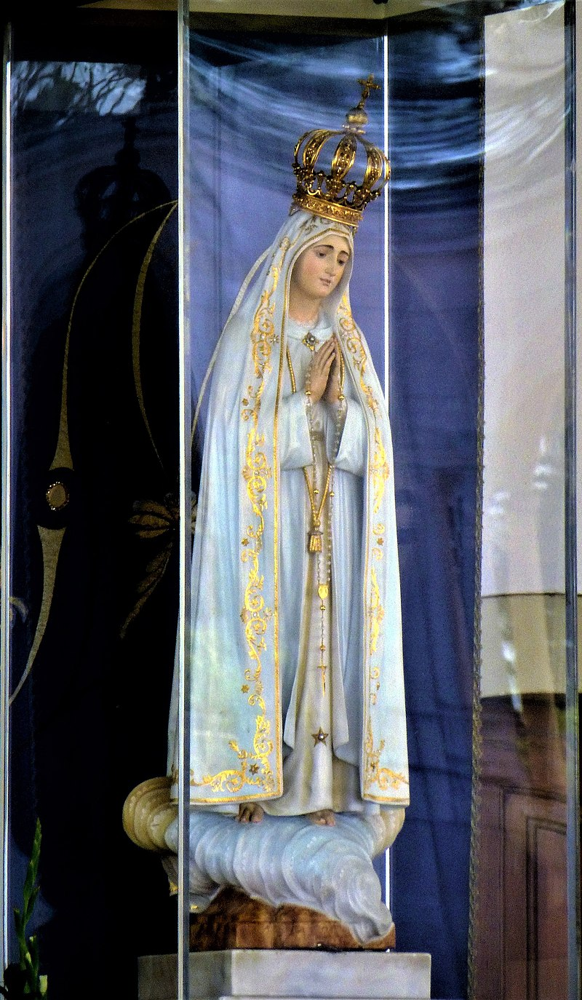
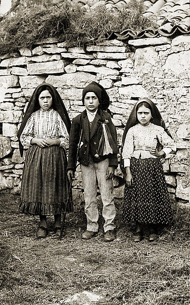

फातिमा

प्रत्येक माह की 12 और 13 तारीख को हमारी माता यह मुकुट पहनती हैं
फातीमा का सुलह संदेश
“काश मैं हर हृदय में वह आग डाल पाती जो मेरे सीने में जलती है और मुझे यीशु और मरियम के हृदयों से इतना प्रेम करने के लिए प्रेरित करती है!” (संत जैसिंटा मार्टो)
“मैं मुक्तिदाता को सांत्वना देना चाहती हूँ और फिर पापियों का हृदय परिवर्तन करना चाहती हूँ, ताकि वे उन्हें और अधिक अपमानित न करें!” (संत फ्रांसिस्को मार्टो)
पापियों के लिए स्वयं को अर्पित करें और अक्सर यीशु से कहें, विशेष रूप से जब आप कोई बलिदान देते हैं:
हे मेरे यीशु, यह आपके प्रति प्रेम के लिए, पापियों के हृदय परिवर्तन के लिए, पवित्र पिता के लिए और मरियम के निष्कलंक हृदय के विरुद्ध पापों के प्रायश्चित के लिए है।
(13 जुलाई 1917 को फातीमा में मरियम)
पुर्तगाली मूल पांडुलिपि से बहन लूसिया की यादें

ईश्वर के साथ मेल-मिलाप करो (2 कुरिन्थियों 5,20)
जब ईश्वर अपनी दयालु प्रेम से प्रेरित होकर मरियम को पृथ्वी के बच्चों के पास एक संदेश के साथ भेजते हैं, तो इसके पीछे ईश्वर की वह लालसा छिपी होती है जो चाहती है कि सभी मनुष्यों का उद्धार हो। (1 तीमुथियुस 2,4)
मरियम मानो अच्छे चरवाहे की माता के रूप में आती हैं, ताकि अपने पुत्र की भेड़ों को सुसमाचार की मुक्तिदायी सच्चाइयों की याद दिला सकें।
तुम में से ऐसा कौन है जिसके पास सौ भेड़ें हों और उनमें से एक खो जाए, तो वह उन निन्यानवे को जंगल में छोड़कर उस खोई हुई को तब तक नहीं खोजता जब तक वह मिल न जाए? और जब वह मिल जाती है, तो वह उसे खुशी-खुशी अपने कंधों पर उठा लेता है...
मैं तुमसे कहता हूँ: इसी तरह स्वर्ग में भी एक पश्चातापी पापी पर अधिक खुशी होगी। (लूका 15,4)
“वह प्रकाश जो सभी दर्शन स्थलों पर उनके पावन स्वरूप को घेरे रहता है, उस अंधकार के विरुद्ध एक आक्रमण मोर्चा है जिसमें पापी दुनिया के डूबने का खतरा है। […] वह विनती करती हैं, याचना करती हैं और रोती हैं। वह 18 जुलाई 1830 को पेरिस की रुए डू बैक में रोती हैं। वह 1846 में ला सैलेट में रोती हैं, और लियोन ब्लोय उनके आँसुओं के बारे में लिखते हैं कि वे दुनिया में 'Consummatum est' — क्रूस पर 'पूरा हुआ' के बाद से सुने गए सबसे हृदयविदारक आह थे। वह 21 फरवरी 1858 को लूर्डेस में रोती हैं, और कौन प्रभावित नहीं होगा जब वह मासूम बच्ची बर्नाडेट को यह कहते हुए सुनता है कि वह इसलिए रो रही है क्योंकि वह महिला रो रही है। ये आँसू निश्चित रूप से पापियों की हठधर्मिता पर स्वर्गीय शोक के संकेत हैं। लेकिन वे उस अंतिम प्रयास का भी हिस्सा हैं जो केवल एक माँ का हृदय ही अपने बच्चों को करुणा और पश्चाताप के आँसुओं के लिए प्रेरित करने के लिए सोच और कर सकता है।”
[ए. जे. फुह्स — फातीमा और शांति, पृ. 46.]
और फातीमा में, जो 13 मई 1917 तक पूरी तरह से अज्ञात पुर्तगाल का एक छोटा सा स्थान था, मरियम अपना विशाल बचाव कार्य जारी रखती हैं। वह अपने पृथ्वी के बच्चों से ईश्वर के साथ मेल-मिलाप करने और “उन्हें और अधिक अपमानित न करने” का आग्रह करती हैं। दूसरी चीज़ जो वह अपने बच्चों से इतनी अधिक मांगती हैं, वह है प्रार्थना और बलिदान के माध्यम से उनके महान बचाव कार्य में सहायता: “प्रार्थना करो, बहुत प्रार्थना करो और पापियों के लिए बलिदान दो।” और वह अपनी भेड़ों द्वारा दी गई प्रायश्चित प्रार्थनाओं और बलिदानों के साथ अपने दिव्य पुत्र के पास दौड़ती हैं और दया तथा धैर्य की याचना करती हैं।
पुस्तक “सिस्टर लूसिया स्पीक्स अबाउट फातीमा — मेमोयर्स ऑफ सिस्टर लूसिया I” में, देवदूत और ईश्वर की माता के दर्शनों के अलावा, उन तीन चरवाहे बच्चों के जीवन का भी वर्णन किया गया है, जिन्होंने हमारी माता की विनती को अनुकरणीय तरीके से पूरा किया। आत्माओं के उद्धार के लिए उनकी अथक प्रार्थना और बलिदान फातीमा के संदेश को एक बहुत ही विशेष आकर्षण प्रदान करते हैं। 13 मई 2000 को फ्रांसिस्को और जैसिंटा मार्टो को संत पापा जॉन पॉल II द्वारा धन्य घोषित किया गया। और 13 मई 2017 को संत पापा फ्रांसिस द्वारा उन्हें संत घोषित किया गया।
ईश्वर ने इन शुद्ध बाल-आत्माओं को अपनी भेड़ों को सुसमाचार के हरे-भरे चरागाह और फूटते स्रोत की ओर ले जाने के लिए चुना है। इस प्रकार छोटे चरवाहे हमारी माता के मार्गदर्शन में यीशु के हृदय के अनुसार आत्माओं के चरवाहे बन गए। वे सभी विश्वासियों, विशेष रूप से बच्चों के लिए पवित्रता के मार्ग पर आगे चमकते हैं। वे शांति के दूत हैं, उस अकथनीय शांति के जिसके लिए मानवता इतनी अधिक तरसती है। बेथलहम का शुभ संदेश फातीमा में गूँजता है:
डरो मत; मैं शांति का दूत हूँ!
हाल के संत पापाओं में, जो सभी फातीमा के महान भक्त थे, संत पापा जॉन पॉल II विशेष रूप से उभर कर आते हैं। 13 मई 1981 को उनके जीवन पर हुए हमले ने उन्हें फातीमा के संदेश के प्रति और अधिक जागरूक बना दिया। संत पापा ने बार-बार इस बात पर ज़ोर दिया कि ईश्वर की माता ने उनका जीवन बचाया और उनके विरुद्ध गोली को इस तरह निर्देशित किया कि वह हमले में जीवित बच गए। इसलिए उन्होंने अपने शरीर को भेदने वाली गोली फातीमा की हमारी माता को भेंट कर दी। 13 मई 1982 को उन्होंने फातीमा में प्रार्थना की:
ओ निष्कलंक हृदय! बुराई के खतरे को दूर करने में हमारी सहायता करें... विश्व के इतिहास में एक बार फिर मुक्ति की अनंत शक्ति दिखाई दे: दयालु प्रेम की शक्ति! यह बुराई को रोके और विवेक को बदल दे! आपके निष्कलंक हृदय में सभी के लिए आशा का प्रकाश प्रकट हो!
एक बार दो पुरोहित हमसे पूछताछ करने आए। उन्होंने हमें पवित्र पिता के लिए प्रार्थना करने की सलाह दी। जैसिंटा ने पूछा कि पवित्र पिता कौन हैं, और पुरोहितों ने हमें समझाया कि वे कौन हैं और उन्हें हमारी प्रार्थनाओं की कितनी आवश्यकता है। जैसिंटा के मन में पवित्र पिता के लिए इतना बड़ा प्रेम था कि वह हमेशा, जब भी यीशु को अपना बलिदान अर्पित करती थी, जोड़ देती थी “और पवित्र पिता के लिए”। जपमाला के अंत में वह हमेशा पवित्र पिता के लिए तीन प्रणाम मरिया पढ़ती थी। [1 E I. 11]
मैं अच्छा चरवाहा हूँ! (यूहन्ना 10,14)
जैसिंटा को सफेद मेमनों को उठाना, उन्हें गले लगाना और चूमना और शाम को उन्हें अपनी गोद में घर ले जाना भी बहुत पसंद था ताकि वे थक न जाएं। एक दिन वह घर जाते समय झुंड के बीच में खड़ी हो गई।
— जैसिंटा — मैंने पूछा, तुम वहाँ भेड़ों के बीच में क्यों चल रही हो?
— हमारे मुक्तिदाता की तरह करने के लिए, जो एक चित्र पर जो मुझे दिया गया था, इसी तरह कई भेड़ों के बीच खड़े हैं और एक को अपनी गोद में लिए हुए हैं। [1 E I. 6]
एक देवदूत और तीन चरवाहे बच्चे
पहला दर्शन 1916
हम थोड़ी देर खेल चुके थे जब अचानक, हालांकि अन्यथा एक शांत दिन था, एक तेज़ हवा ने पेड़ों को हिला दिया। हमने ऊपर देखा और […] एक 14 से 15 साल के युवक को देखा, जो बर्फ से भी सफेद था। […], वह बहुत सुंदर था। जब वह हमारे सामने खड़ा हुआ, तो उसने कहा:
— डरो मत! मैं शांति का दूत हूँ! मेरे साथ प्रार्थना करो! जमीन पर घुटने टेकते हुए उसने अपना माथा जमीन तक झुकाया और हमसे तीन बार ये शब्द दोहराने को कहा:
— मेरे ईश्वर, मैं तुझ पर विश्वास करता हूँ, मैं तेरी आराधना करता हूँ, मैं तुझ पर आशा रखता हूँ, मैं तुझसे प्रेम करता हूँ। मैं उन लोगों के लिए तुझसे क्षमा मांगता हूँ जो तुझ पर विश्वास नहीं करते, तेरी आराधना नहीं करते, तुझ पर आशा नहीं रखते और तुझसे प्रेम नहीं करते।
फिर उसने उठते हुए कहा:
— तुम इस तरह प्रार्थना करोगे। यीशु और मरियम के हृदय तुम्हारी विनती भरी प्रार्थनाओं की प्रतीक्षा कर रहे हैं।
उसके शब्द हमारी स्मृति में इतनी गहराई से अंकित हो गए कि हम उन्हें कभी नहीं भूले। तब से हमने उन्हें इतनी गहराई से झुककर दोहराने में बहुत समय बिताया, जब तक कि हम कभी-कभी थकान से गिर नहीं जाते थे। [2 E II. 2]
दूसरा दर्शन 1916
काफी समय बाद हम एक गर्मी के दिन […] एक कुएं के पास खेल रहे थे। […] अचानक हमने अपने सामने वही स्वरूप देखा, वह देवदूत, जैसा मुझे लगा। उसने कहा:
— तुम क्या कर रहे हो? प्रार्थना करो, बहुत प्रार्थना करो! यीशु और मरियम के हृदय की तुम्हारे लिए दया की योजनाएं हैं। सर्वशक्तिमान को निरंतर प्रार्थनाएं और बलिदान अर्पित करो।
— हम बलिदान कैसे देंगे? — मैंने पूछा।
— जो कुछ भी तुम कर सकते हो, उसे एक बलिदान बनाओ, उन पापों का प्रायश्चित करने के लिए जिनसे उन्हें अपमानित किया जाता है और पापियों के रूपांतरण की याचना करने के लिए। […] सबसे बढ़कर दुख को स्वीकार करो और समर्पण के साथ वह सहो जो प्रभु तुम्हें भेजेंगे। [2 E II. 2]
देवदूत के ये शब्द हमारी आत्मा में एक प्रकाश की तरह अंकित हो गए जिसने हमें यह पहचानने में मदद की कि ईश्वर कौन है, वह हमसे कितना प्रेम करता है और हमसे बदले में प्रेम चाहता है। हमने बलिदान के मूल्य को पहचाना और यह कि वह उसे कितना प्रिय है; और वह बलिदान के कारण पापियों को कैसे परिवर्तित करता है। उस समय से हमने प्रभु को वह सब अर्पित करना शुरू कर दिया जिसने हमें दुखी किया, फिर भी हमने घंटों जमीन पर गिरकर देवदूत की प्रार्थना दोहराने के अलावा कोई अन्य तपस्या या पश्चाताप नहीं खोजा। [4 E II. 1]
तीसरा दर्शन 1916
इस तरह कुछ समय बीत गया और हम अपने झुंड के साथ मेरे माता-पिता की एक ज़मीन की ओर जा रहे थे। […] जब हम वहाँ पहुँचे, तो हमने घुटनों के बल बैठकर, चेहरे जमीन पर टिकाकर, देवदूत की प्रार्थना दोहराना शुरू किया:
— मेरे ईश्वर, मैं तुझ पर विश्वास करता हूँ …
मुझे नहीं पता कि हमने कितनी बार यह प्रार्थना दोहराई थी जब हमने अपने ऊपर एक अज्ञात प्रकाश चमकते देखा। हम यह देखने के लिए सीधे हुए कि क्या हो रहा है और देवदूत को देखा। उसके बाएं हाथ में एक प्याला (chalice) था; उसके ऊपर एक होस्ट (host) तैर रही थी, जिससे खून की कुछ बूंदें प्याले में गिर रही थीं। देवदूत ने प्याले को हवा में तैरते हुए छोड़ दिया, हमारे पास घुटने टेक दिए और हमसे तीन बार दोहराने को कहा:
परम पावन त्रित्व, पिता, पुत्र और पवित्र आत्मा, मैं अत्यंत गहन श्रद्धा के साथ तेरी आराधना करता हूँ और तुझे यीशु मसीह का बहुमूल्य शरीर, रक्त, आत्मा और दिव्यता अर्पित करता हूँ, जो दुनिया के सभी टैबरनेकल में उपस्थित हैं, उन सभी अपमानों, अपवित्रताओं और उदासीनता के प्रायश्चित के लिए जिनसे वे स्वयं अपमानित होते हैं। उनके परम पावन हृदय और मरियम के निष्कलंक हृदय के अनंत गुणों के माध्यम से, मैं तुझसे गरीब पापियों के रूपांतरण की विनती करता हूँ।
फिर वह उठा, प्याला और होस्ट ली, मुझे पवित्र होस्ट दी, और प्याले के रक्त को जैसिंटा और फ्रांसिस्को के बीच विभाजित किया, और कहा:
— शरीर ग्रहण करो और यीशु मसीह का रक्त पियो, जो कृतघ्न मनुष्यों द्वारा इतने भयानक रूप से अपमानित किए जाते हैं। उनके पापों का प्रायश्चित करो और अपने ईश्वर को सांत्वना दो! वह फिर से जमीन पर घुटने टेक कर बैठ गया, हमारे साथ तीन बार वही प्रार्थना दोहराई:
परम पावन त्रित्व …
और गायब हो गया। हम इसी मुद्रा में रहे और वही शब्द दोहराते रहे। [2 E II. 2]
आइए हम यूखरिस्त में उपस्थित प्रभु के सामने लंबे समय तक घुटनों के बल रहें, अपने विश्वास और अपने प्रेम के साथ उस उपेक्षा, विस्मृति और यहाँ तक कि उन अपमानों का प्रायश्चित करें जो हमारे मुक्तिदाता को दुनिया के कई हिस्सों में सहने पड़ते हैं। (संत पापा जॉन पॉल II, Mane nobiscum Domine, 18)
हमारी माता आती हैं
13 मई 1917
मैं फ्रांसिस्को और जैसिंटा के साथ कोवा दा इरिया की ढलान की चोटी पर खेल रही थी। […] तभी हमने अचानक बिजली जैसी कोई चीज़ देखी। […]
हमने ढलान से नीचे उतरना शुरू किया और भेड़ों को सड़क की ओर हाँका। जब हम ढलान के लगभग बीच में थे, […] हमने एक ओक के पेड़ के ऊपर एक महिला को देखा, जो पूरी तरह से सफेद कपड़े पहने हुए थी, सूरज से भी अधिक चमकदार। […] इस दर्शन से हैरान होकर हम खड़े रह गए। […] तब हमारी माता ने कहा:
— डरो मत! मैं तुम्हारा कोई नुकसान नहीं करूँगी!
— आप कहाँ से आई हैं? — मैंने उनसे पूछा।
— मैं स्वर्ग से हूँ!
— और आप मुझसे क्या चाहती हैं?
— मैं आपसे यह पूछने आई हूँ कि आप अगले छह महीनों तक, हर तेरहवीं तारीख को इसी समय यहाँ आएं। तब मैं आपको बताऊँगी कि मैं कौन हूँ और मैं क्या चाहती हूँ। […]
— क्या मैं भी स्वर्ग जाऊँगी?
— हाँ, तुम जाओगी!
— और जैसिंटा?
— वह भी!
— और फ्रांसिस्को?
— वह भी, लेकिन उसे अभी बहुत सी जपमालाएँ पढ़नी होंगी। […]
— क्या आप उन सभी दुखों को सहने के लिए खुद को ईश्वर को अर्पित करना चाहते हैं जो वह आपको भेजेंगे, उन पापों के प्रायश्चित के लिए जिनसे वह अपमानित होते हैं और पापियों के रूपांतरण की विनती के रूप में?
— हाँ, हम चाहते हैं!
— तो आपको बहुत कष्ट सहने होंगे, लेकिन ईश्वर का अनुग्रह आपकी सांत्वना होगा!
13 मई से 13 अक्टूबर 1917 तक के दर्शनों के दौरान, हमारी माता का तीनों बच्चों के साथ “संचार का स्तर” अलग-अलग था: जैसिंटा ने कुंवारी मरियम को देखा और सुना; लूसिया ने देखा, सुना और वह एकमात्र थी जिसने उनसे बात की; फ्रांसिस्को ने सब कुछ देखा लेकिन कभी नहीं सुन सका कि हमारी माता ने क्या कहा।
जब उन्होंने ये अंतिम शब्द कहे, तो उन्होंने पहली बार अपने हाथ खोले और हमें इतना तेज़ प्रकाश दिया, जैसे उनके हाथों से कोई प्रतिबिंब निकल रहा हो। यह हमारे सीने में और हमारी आत्माओं की सबसे गहरी गहराई तक समा गया और हमने खुद को ईश्वर में पहचाना, जो यह प्रकाश थे, उससे कहीं अधिक स्पष्ट रूप से जितना हम खुद को सबसे अच्छे दर्पण में देख सकते थे। एक आंतरिक प्रेरणा से, जो हमें भी दी गई थी, हम अब घुटनों के बल गिर गए और मन ही मन दोहराया:
— ओ परम पावन त्रित्व, मैं तेरी आराधना करता हूँ। मेरे ईश्वर, मेरे ईश्वर, मैं तुझसे परम पावन संस्कार में प्रेम करता हूँ।
कुछ क्षणों के बाद हमारी माता ने जोड़ा:
— प्रतिदिन जपमाला (रोज़री) की प्रार्थना करो, दुनिया के लिए शांति और युद्ध की समाप्ति प्राप्त करने के लिए! इसके बाद वह धीरे-धीरे ऊपर उठने लगीं और सूर्योदय की दिशा में चढ़ने लगीं, जब तक कि वह अनंत दूरी में गायब नहीं हो गईं। [4 E II. 3]
उस महिला ने हमसे कहा था कि हमें जपमाला पढ़नी चाहिए और पापियों के रूपांतरण के लिए बलिदान देना चाहिए। अब जब हम जपमाला पढ़ते हैं, तो हमें प्रणाम मरिया और हे हमारे पिता को पूरा पढ़ना चाहिए। और बलिदान, हम उन्हें कैसे देंगे?
फ्रांसिस्को ने जल्दी ही एक अच्छा बलिदान खोज लिया।
— चलो अपना दोपहर का खाना भेड़ों को दे देते हैं — हम कुछ न खाने का बलिदान देते हैं। कुछ ही मिनटों में हमारा भोजन झुंड में बाँट दिया गया। [1 E I. 8]
“हमें सलाह दी गई थी कि दोपहर के नाश्ते के बाद जपमाला पढ़ें, लेकिन क्योंकि हमें खेलने का समय बहुत कम लगता था, हमने जल्दी खत्म करने का एक अच्छा तरीका खोज लिया था: हम मोतियों को सरकाते थे और केवल कहते थे: Ave Maria, Ave Maria, Ave Maria! जब हम रहस्य के अंत में पहुँचते थे, तो हम एक लंबे अंतराल के साथ साधारण शब्द कहते थे: हे हमारे पिता। और इस तरह हमने पलक झपकते ही अपनी जपमाला पढ़ ली थी।” [1 E I. 6]
चरवाहे बच्चे कारागार में
13 अगस्त 1917 को चरवाहे बच्चों पर दबाव डाला गया कि वे कोवा दा इरिया में न जाएँ। जब उन्होंने सत्य पर दृढ़ रहना चुना, तो उन्हें पकड़कर कारागार में बंद कर दिया गया।
वहाँ उन्हें धमकाया गया और डराया गया, फिर भी उन्होंने अपनी प्रार्थना और बलिदान को नहीं छोड़ा। वे अपने दुख को यीशु को अर्पित करते रहे और पापियों के हृदय परिवर्तन के लिए प्रायश्चित करते रहे।
हमारी माता फिर आती हैं
19 अगस्त 1917 (Valinhos)
13 अगस्त की घटनाओं के बाद माता मरियम बच्चों को वलीन्होस में दिखाई दीं। उन्होंने उन्हें 13 तारीख को आने और प्रतिदिन रोज़री पढ़ने के लिए कहा।
उन्होंने आग्रह किया कि वे पापियों के लिए बहुत प्रार्थना करें और बलिदान दें।
13 सितम्बर 1917
सितम्बर में भी उन्होंने रोज़री में दृढ़ रहने को कहा और वादा किया कि अक्टूबर में एक चिन्ह दिया जाएगा ताकि सब विश्वास करें।
13 अक्टूबर 1917
13 अक्टूबर 1917 को कोवा दा इरिया में बहुत बड़ी भीड़ एकत्र हुई। वर्षा और कीचड़ के बीच भी लोग प्रतिज्ञात चिन्ह की प्रतीक्षा कर रहे थे।
माता मरियम ने पश्चात्ताप, प्रार्थना और बुराई से दूर होने का आह्वान किया तथा वहाँ एक छोटी चैपल बनाने की इच्छा प्रकट की।
इसके बाद वह प्रसिद्ध “सूर्य का चमत्कार” हुआ, जिसे अनेक लोगों ने देखा: सूर्य घूमता, रंग बदलता और मानो धरती की ओर आता प्रतीत हुआ।
महान वादा
10 दिसंबर 1925 को बहन लूसिया को पोंटेवेद्रा में परम पावन कुंवारी और बगल में, एक चमकते बादल में, एक बच्चा दिखाई दिया। परम पावन कुंवारी ने अपना हाथ उसके कंधे पर रखा और कांटों से घिरा एक हृदय दिखाया, जिसे वह अपने दूसरे हाथ में लिए हुए थीं। बच्चे ने कहा:
— अपनी परम पावन माता के हृदय पर दया करो, जो कांटों से घिरा हुआ है जिसे कृतघ्न मनुष्य निरंतर भेदते रहते हैं, बिना किसी के प्रायश्चित का कार्य किए उन्हें बाहर निकालने के लिए।
तब परम पावन कुंवारी ने कहा:
— मेरी बेटी, मेरे हृदय को देखो जो कांटों से घिरा हुआ है जिसे कृतघ्न मनुष्य अपने अपमान और कृतघ्नता से निरंतर भेदते रहते हैं। कम से कम तुम मुझे सांत्वना देने का प्रयास करो और यह बताओ कि मैं उन सभी को मृत्यु के समय उन सभी अनुग्रहों के साथ सहायता करने का वचन देती हूँ जो इन आत्माओं के उद्धार के लिए आवश्यक हैं, जो पांच महीनों तक हर पहले शनिवार को स्वीकारोक्ति (confession) करेंगे, पवित्र परमप्रसाद ग्रहण करेंगे, एक जपमाला पढ़ेंगे और 15 मिनट तक जपमाला के 15 रहस्यों पर मनन करके मेरा साथ देंगे, इस इरादे से कि वे इसके द्वारा मेरा प्रायश्चित करें।
15 फरवरी 1926 को उन्हें फिर से बालक यीशु दिखाई दिए। उन्होंने उनसे पूछा कि क्या उन्होंने अपनी माता की भक्ति फैला दी है। उन्होंने उन्हें उन कठिनाइयों के बारे में बताया जो स्वीकारोक्ति कराने वाले पुरोहित को थीं, और उनसे कहा कि मदर सुपीरियर इसे फैलाने के लिए तैयार थीं, लेकिन पुरोहित ने कहा था कि वह अकेले कुछ नहीं कर सकतीं। यीशु ने उत्तर दिया:
— यह सच है कि तुम्हारी सुपीरियर अकेले कुछ नहीं कर सकती, लेकिन मेरे अनुग्रह के साथ वह सब कुछ कर सकती है।
उन्होंने यीशु को उन कठिनाइयों के बारे में बताया जो कुछ आत्माओं को शनिवार को स्वीकारोक्ति करने में थीं, और प्रार्थना की कि स्वीकारोक्ति आठ दिनों तक मान्य हो। यीशु ने उत्तर दिया:
— हाँ, यह और भी अधिक समय तक हो सकता है, बशर्ते कि जब वे मुझे ग्रहण करें तो वे अनुग्रह की स्थिति में हों, और उनका इरादा मरियम के निष्कलंक हृदय का प्रायश्चित करना हो।
— मेरे यीशु, और यदि कोई इस इरादे को बनाना भूल जाए?
यीशु ने उत्तर दिया:
— वे अगली स्वीकारोक्ति में ऐसा कर सकते हैं, बशर्ते कि वे स्वीकारोक्ति के लिए मिलने वाले पहले अवसर का लाभ उठाएं।
(स्रोत: [A I])
रूस के समर्पण का अनुरोध
फातिमा के संदेश में शांति और हृदय परिवर्तन एक साथ जुड़े हैं। बाद में बहन लूसिया के माध्यम से माता मरियम ने रूस को अपने निष्कलंक हृदय को समर्पित करने और पहले शनिवार की प्रायश्चित-भक्ति को बढ़ाने का अनुरोध किया।
यह अनुरोध राजनीतिक नहीं, बल्कि आध्यात्मिक है: ताकि लोग ईश्वर की ओर लौटें, और सच्ची शांति स्थापित हो।
फातिमा का “रहस्य”
फातिमा का “रहस्य” सामान्यतः तीन भागों में बताया जाता है: पहला नरक का दर्शन, जो आत्माओं के उद्धार के लिए प्रार्थना और प्रायश्चित की पुकार है। दूसरा भाग संसार के पापों और आने वाले संकटों के संदर्भ में निष्कलंक हृदय को समर्पण और प्रायश्चित का आह्वान करता है।
तीसरा भाग कलीसिया की परीक्षाओं और विश्वासियों के दुखों की ओर संकेत करता है, ताकि हम भय नहीं, बल्कि परिवर्तन और विश्वास में जीएँ।
हमारी माता मरियम के छोटे प्रेरित
फ्रांसिस्को और जैसिंटा, साधारण चरवाहे बच्चे, माता मरियम के “छोटे प्रेरित” बने। उन्होंने रोज़री, बलिदान और प्रायश्चित के द्वारा पापियों के लिए प्रेम दिखाया।
उनका उदाहरण बताता है कि बचपन में भी पवित्रता संभव है, यदि हम विश्वास, प्रार्थना और प्रेम में दृढ़ रहें।
संदेश संक्षेप में
फातीमा के संदेश को हमारी माता द्वारा सुसमाचार का संक्षिप्त सार भी कहा जाता है, और इसमें निम्नलिखित मुख्य बिंदु शामिल हैं:
दृढ़ हृदय परिवर्तन
ईश्वर की आज्ञाओं और व्यक्तिगत कर्तव्यों का वफादारी से पालन
नियमित रूप से संस्कारों को ग्रहण करना
मरियम के निष्कलंक हृदय की भक्ति
मरियम को व्यक्तिगत समर्पण के माध्यम से
मननशील प्रार्थना, विशेष रूप से जपमाला और प्रायश्चित प्रार्थनाओं के माध्यम से
मरियम के निष्कलंक हृदय के प्रायश्चित शनिवारों के अभ्यास के माध्यम से
ब्राउन स्कैपुलर पहनने के माध्यम से
उचित प्रेरितिक कार्य, विशेष रूप से दूसरों की ओर से प्रार्थना और बलिदान
देवदूत की प्रायश्चित प्रार्थनाएँ
“मेरे ईश्वर, मैं तुझ पर विश्वास करता हूँ, मैं तेरी आराधना करता हूँ, मैं तुझ पर आशा रखता हूँ, मैं तुझसे प्रेम करता हूँ। मैं उन लोगों के लिए तुझसे क्षमा मांगता हूँ जो तुझ पर विश्वास नहीं करते, तेरी आराधना नहीं करते, तुझ पर आशा नहीं रखते और तुझसे प्रेम नहीं करते।”
“परम पावन त्रित्व, पिता, पुत्र और पवित्र आत्मा, मैं अत्यंत गहन श्रद्धा के साथ तेरी आराधना करता हूँ और तुझे यीशु मसीह का बहुमूल्य शरीर, रक्त, आत्मा और दिव्यता अर्पित करता हूँ, जो दुनिया के सभी टैबरनेकल में उपस्थित हैं, उन सभी अपमानों, अपवित्रताओं और उदासीनता के प्रायश्चित के लिए जिनसे वे स्वयं अपमानित होते हैं। उनके परम पावन हृदय और मरियम के निष्कलंक हृदय के अनंत गुणों के माध्यम से, मैं तुझसे गरीब पापियों के रूपांतरण की विनती करता हूँ।”
दैनिक अर्पण
“दिव्य हृदय यीशु, मरियम के निष्कलंक हृदय के माध्यम से मैं तुझे वह सब अर्पित करता हूँ जो मैं आज प्रार्थना करता हूँ, काम करता हूँ, बलिदान देता हूँ और सहता हूँ, सभी के नाम पर और त्रिविध पवित्र कलीसिया की सभी आत्माओं के लिए, उस इरादे से जिसके साथ तू स्वयं निरंतर प्रार्थना करता है और आत्माओं के उद्धार के लिए हमारी वेदियों पर खुद को अर्पित करता है। आमेन।”
“मनुष्य कभी भी उससे बड़ा नहीं होता जहाँ वह घुटने टेकता है।”
(संत पापा जॉन XXIII)
हमारी माता मरियम के मोती
«स्वर्ग का राज्य उस व्यापारी के समान है जो उत्तम मोतियों की खोज में था। जब उसे एक बहुमूल्य मोती मिला, तो उसने जाकर अपना सब कुछ बेच दिया और उसे खरीद लिया।»
(मत्ती 13,45-46)
जब मरियम बार-बार हमारे हृदय से आग्रह करती हैं: «प्रतिदिन जपमाला (रोज़री) की प्रार्थना करो!», तो वह हमें सुसमाचार का वह बहुमूल्य मोती सौंपती हैं, जो जपमाला के रहस्यों में छिपा है।
और हममें से कौन जीवन में सबसे मूल्यवान चीज़ की तलाश में नहीं है? फिर भी हम अक्सर उन मोतियों की ओर हाथ बढ़ाते हैं जो केवल बाहर से चमकते हैं, लेकिन अनंत काल के लिए मूल्यहीन हैं। इसलिए मरियम हमसे इतनी दृढ़ता से आग्रह करती हैं कि हम इस जीवन के सभी व्यर्थ और भ्रामक मोतियों को «बेच» दें ताकि उस एक बहुमूल्य मोती को प्राप्त कर सकें।
जपमाला के रहस्यों पर मनन करते हुए और उन्हें अपने दैनिक जीवन के धागे से मजबूती से जोड़कर, स्वर्ग का राज्य — और उसके साथ स्वयं ईश्वर — हमारे लिए और अधिक खुलते जाते हैं।
जपमाला की रानी की प्रतिज्ञाएँ
धन्य एलन डी रूप (1428-1475), जो डोमिनिकन धर्मसंघ के एक जपमाला प्रचारक थे, माता मरियम के एक दर्शन के बारे में बताते हैं। उन्होंने उन्हें जपमाला प्रार्थना का समर्थन करने और इसे फैलाने का कार्य सौंपा। मरियम ने उन लोगों से अनगिनत अनुग्रहों का वादा किया है जो इस प्रार्थना के माध्यम से पूर्ण विश्वास के साथ उन्हें पुकारते हैं।
कुल 15 प्रतिज्ञाओं में से यहाँ पाँच का उल्लेख किया गया है:
«मैं उन सभी को अपनी विशेष सुरक्षा और महान अनुग्रह देने का वचन देती हूँ जो भक्तिपूर्वक मेरी जपमाला का पाठ करेंगे।»
(देखें हिरोशिमा का प्रार्थना चमत्कार: 6 अगस्त 1945 को हिरोशिमा पर हुए भयानक परमाणु बम विस्फोट के दौरान, चार जेसुइट पुरोहितों को परमाणु विकिरण के भयानक परिणामों से रहस्यमय तरीके से बचाया गया था। 1.5 किलोमीटर के दायरे में, वे सैकड़ों-हजारों लोगों में से एकमात्र जीवित बचे थे। यहाँ तक कि उनका पैरिश हाउस, जो विस्फोट के केंद्र से केवल आठ ब्लॉक दूर था, अभी भी खड़ा था, जबकि आसपास की सभी इमारतें पूरी तरह से नष्ट हो गई थीं। लगभग 200 डॉक्टरों और वैज्ञानिकों ने बार-बार अपने कई सवालों का एक ही जवाब सुना: «मिशनरियों के रूप में हम अपने जीवन में बस फातिमा की माता मरियम के संदेश को जीना चाहते थे और इसलिए हम हर दिन जपमाला की प्रार्थना करते थे।» यह हिरोशिमा का आशाजनक संदेश है: जपमाला की प्रार्थना परमाणु बम से भी अधिक शक्तिशाली है। आज पुनर्निर्मित शहर के केंद्र में एक मरियम स्मारक चर्च है, जहाँ दिन-रात जपमाला की प्रार्थना की जाती है। [स्रोत: http://www.gnadenquelle.de/hiroshima.htm])«जपमाला सद्गुणों और धर्मनिष्ठा के कार्यों को फिर से जीवित करती है। इसके माध्यम से आत्माओं को दिव्य करुणा की प्रचुरता प्राप्त होती है।»
यह हृदयों को परिवर्तित कर देगी, और वे सांसारिक चीजों का तिरस्कार करना, स्वर्गीय चीजों से प्रेम करना और तेजी से प्रगति करना शुरू कर देंगे। जपमाला के माध्यम से कई आत्माएं बचाई जाएंगी।«वे सभी जो भक्तिपूर्वक जपमाला पढ़ते हैं और रहस्यों पर मनन करते हैं, वे दुर्भाग्य से नहीं दबेंगे और अप्रत्याशित मृत्यु से बचे रहेंगे। यदि वे पाप में हैं, तो वे परिवर्तन का अनुग्रह प्राप्त करेंगे; और यदि वे धर्मी हैं, तो दृढ़ता का अनुग्रह प्राप्त करेंगे, और वे अनंत जीवन के भागीदार बनेंगे।»
«मैं बहुत जल्द उन आत्माओं को शुद्धिकरण (पर्गेटरी) से मुक्त कर दूँगी जिन्होंने अपने जीवन में मेरी जपमाला से प्रेम किया है।»
«मेरी जपमाला के वफादार बच्चे स्वर्ग में महान महिमा का आनंद लेंगे।»
(स्रोत: मोती और गुलाब)
जपमाला के रहस्य
प्रारंभ:
पिता और पुत्र और पवित्र आत्मा के नाम पर... (क्रूस का चिह्न)
मैं ईश्वर में विश्वास करता हूँ... (प्रेरितों का धर्मसार)
इसके बाद:
1 हे हमारे पिता
3 प्रणाम मरिया (Ave Maria), जिनमें से प्रत्येक में «यीशु» नाम के बाद तीन ईश्वरीय सद्गुण जोड़े जाते हैं:
... जो हमारे विश्वास को बढ़ाएं
... जो हमारी आशा को मजबूत करें
... जो हमारे प्रेम को प्रज्वलित करें
यह प्रारंभ पिता की महिमा के साथ समाप्त होता है।
जपमाला के रहस्यों का क्रम:
प्रत्येक जपमाला रहस्य के लिए पहले:
1 हे हमारे पिता की प्रार्थना की जाती है।
इसके बाद:10 प्रणाम मरिया संबंधित ध्यान पाठ* के साथ, जिसे «यीशु» नाम के बाद जोड़ा जाता है।
प्रत्येक रहस्य के अंत में:पिता की महिमा
तथाकथित फातिमा प्रार्थना:
«हे मेरे यीशु, हमारे पापों को क्षमा कीजिए, हमें नरक की आग से बचाइए, सभी आत्माओं को स्वर्ग में ले जाइए, विशेषकर उन्हें जिन्हें आपकी दया की सबसे अधिक आवश्यकता है।»
(«जो शब्द हम प्रार्थना में बोलते हैं, वे दूत के शब्द हैं, पवित्र आत्मा के शब्द हैं... जपमाला में नई बात वास्तव में केवल यह है कि हम इन शब्दों पर ठहरते हैं; कि हम उन्हें दोहराते हैं, क्योंकि महान चीजें दोहराने से उबाऊ नहीं होतीं। केवल महत्वहीन चीजों को बदलाव की आवश्यकता होती है... दोहराने से महान और महान हो जाता है, और हम स्वयं इसमें समृद्ध हो जाते हैं...»)
(कार्डिनल जोसेफ रत्ज़िंगर, जर्मन कैथोलिक दिवस 1984 पर)
जपमाला के रहस्य:
आनंदपूर्ण रहस्य
... जिन्हें आपने, हे कुंवारी, पवित्र आत्मा से गर्भ में धारण किया।
... जिन्हें आपने, हे कुंवारी, एलिज़ाबेथ के पास ले गईं।
... जिन्हें आपने, हे कुंवारी, बेथलहेम में जन्म दिया।
... जिन्हें आपने, हे कुंवारी, मंदिर में अर्पित किया।
... जिन्हें आपने, हे कुंवारी, मंदिर में फिर से पाया।
प्रकाशमय रहस्य
... जिनका योहन द्वारा बपतिस्मा हुआ।
... जिन्होंने काना के विवाह में स्वयं को प्रकट किया।
... जिन्होंने हमें ईश्वर के राज्य की घोषणा की।
... जो पर्वत पर रूपांतरित हुए।
... जिन्होंने हमें पवित्र यूखरिस्त प्रदान की।
दुखद रहस्य
... जो हमारे लिए खून के पसीने से लथपथ हुए।
... जिन्हें हमारे लिए कोड़ों से मारा गया।
... जिन्हें हमारे लिए कांटों का ताज पहनाया गया।
... जिन्होंने हमारे लिए भारी क्रूस उठाया।
... जिन्हें हमारे लिए क्रूस पर चढ़ाया गया।
महिमामय रहस्य
... जो मृतकों में से जी उठे।
... जो स्वर्ग सिधार गए।
... जिन्होंने हमें पवित्र आत्मा भेजा।
... जिन्होंने आपको, हे कुंवारी, स्वर्ग में उठा लिया।
... जिन्होंने आपको, हे कुंवारी, स्वर्ग में मुकुट पहनाया।
«परम धन्य कुंवारी ने जपमाला की प्रार्थना को ऐसी प्रभावकारिता दी है कि हमारे जीवन में ऐसी कोई समस्या नहीं है, जिसे इस प्रार्थना के माध्यम से हल न किया जा सके।» (लूसिया डॉस सैंटोस)
«जब हम प्रार्थना करते हैं, तो हम ईश्वर के प्रेम की एक किरण बन जाते हैं: अपने घर में, जहाँ हम रहते हैं, और अंततः पूरी बड़ी दुनिया के लिए।» (संत मदर टेरेसा)
«जपमाला मेरी पसंदीदा प्रार्थना है। यह एक अद्भुत प्रार्थना है, अपनी सादगी और अपनी गहराई में अद्भुत।» (संत पापा जॉन पॉल II)
छोटी जोसेफिनचेन ने भी «बहुमूल्य मोती» खोज लिया है:
«प्रणाम मरिया...»
निष्कलंक मरियम के हृदय को समर्पण
पवित्रतम कुंवरी मरियम! ईश्वर की माता और मेरी माता! मैं अपने आपको और अपने सब कुछ के साथ तेरे निष्कलंक हृदय को समर्पित करता हूँ। मुझे अपनी मातृत्व सुरक्षा के अंतर्गत ले लो! मुझे सभी खतरों से बचाओ। मुझे बुराई की ओर ले जाने वाले प्रलोभनों पर काबू पाने में सहायता करो, ताकि मैं अपने शरीर और आत्मा की पवित्रता बनाए रख सकूँ। तेरा निष्कलंक हृदय मेरा शरणस्थल और ईश्वर तक ले जाने वाला मार्ग हो।
मेरे लिए यीशु के प्रेम के लिए, पापियों के रूपांतरण के लिए और तेरे निष्कलंक हृदय के विरुद्ध किए गए पापों के प्रायश्चित के लिए अक्सर प्रार्थना करने और बलिदान करने की कृपा प्राप्त करो। तेरे और तेरे दिव्य पुत्र के हृदय के साथ एकता में मैं पवित्रतम त्रित्व के पूर्ण समर्पण में जीना चाहता हूँ, जिस पर मैं विश्वास करता हूँ, जिसकी पूजा करता हूँ, जिस पर आशा रखता हूँ और जिससे प्रेम करता हूँ। आमेन।
(सिस्टर एम. लूसिया ऑफ फातिमा)
Imprimatur: फातिमा, 1 जुलाई 2006, एंटोनियो, एप. लेयर.-फातिमेन्सिस
जब हम ईश्वर की माता को सब कुछ मरियम के साथ, मरियम में, मरियम के द्वारा और मरियम के लिए करने के लिए समर्पित करते हैं, तो वह निश्चित रूप से यीशु के पूर्ण समर्पण की ओर ले जाती है। इसी समय, इस समर्पण के माध्यम से हम अपनी आंतरिक और बाहरी संपत्ति, हाँ अपने सभी अच्छे कार्यों के मूल्य को भी मरियम के हाथों में सौंप देते हैं, ताकि वह उन्हें संरक्षित, वृद्धि और सुशोभित कर सके। जो हम इस प्रकार मरियम को सौंपते हैं उसे कोई मनुष्य, न दुष्ट शत्रु, न हमारी अपनी दुर्बलता द्वारा हमसे छीन नहीं सकती। इसके अलावा, हम इस प्रकार उच्च स्तर पर ईसाई प्रेम का अभ्यास करते हैं, क्योंकि हम मरियम को जीवित और मृतकों के लाभ के लिए हमारे आध्यात्मिक संपदा का निपटान करने की अनुमति देते हैं।
(देखें संत एल. एम. ग्रिग्नन डे मोंटफोर्ट, द गोल्डन बुक, पृ. 233–238)
दयालु यीशु को समर्पण
दयालु यीशु, आपकी भलाई अनंत है और आपकी कृपाओं का खज़ाना अक्षय है।
मैं आपकी दया में असीम भरोसा रखता हूँ, जो आपके सभी कार्यों से बढ़कर है।
मैं अपने आपको पूर्णतः आपको समर्पित करता हूँ, ताकि मैं आपकी कृपा और प्रेम की उन किरणों में जी सकूँ जो क्रूस पर आपके हृदय से निकली थीं।
मैं आपकी दया का प्रचार करना चाहता हूँ और विशेषतः दिव्य दया की माला पढ़ना चाहता हूँ, ताकि हमारे लिए, पापियों के रूपांतरण के लिए, समस्त विश्व के लिए और शुद्धिकरण-स्थल (Purgatory) की आत्माओं के लिए आपकी दया की याचना करूँ।
परन्तु आप मुझे अपनी सम्पत्ति और अपने सम्मान की भाँति रक्षा करेंगे, क्योंकि मैं अपनी दुर्बलता से सब कुछ से डरता हूँ और आपकी दया से सब कुछ की आशा रखता हूँ।
समस्त मानवजाति आपकी दया की अथाह गहराई को पहचाने, उसमें अपनी सारी आशा रखे और उसे युगानुयुग महिमा दे। आमेन।
यीशु, मैं आप पर भरोसा करता हूँ,
क्योंकि आप ही मेरी आशा हैं!
हृदयों का विनिमय
मरियम के साथ हृदयों का विनिमय
हे अद्भुत माता, मेरे पापी हृदय के स्थान पर अपना निष्कलंक हृदय रख दीजिए, ताकि पवित्र आत्मा मुझ में कार्य करे और आपका दिव्य पुत्र मुझ में बढ़े।
मेरी विनती स्वीकार कीजिए, आप महान, आप विश्वासयोग्य, आप सब अनुग्रहों की मध्यस्थिका। आमेन।
यीशु के साथ हृदयों का विनिमय
हे भले यीशु, मेरे पापी हृदय के स्थान पर अपना दिव्य घायल हृदय रख दीजिए, ताकि पवित्र आत्मा मुझ में कार्य करे और आप, दयालु यीशु, मुझ में बढ़ें।
मेरी विनती स्वीकार कीजिए, आप भले, आप विश्वासयोग्य और प्रेममय यीशु, ताकि आप शीघ्र ही इस संसार पर शान्ति के राजा के रूप में राज्य करें। आमेन।
टिप्पणी:
यीशु के साथ हृदयों का विनिमय, मरियम के साथ हृदयों के विनिमय द्वारा तैयार किया जाता है। मरियम, अनुग्रहों की महान मध्यस्थिका, हमारे हृदय पर सभी अनुग्रह उंडेलती हैं और यीशु के साथ हृदयों के विनिमय के लिए हमारे हृदय को तैयार करती हैं।
यीशु के साथ हृदयों का विनिमय हमारे हृदय को रूपान्तरित करता है और अनुग्रह को स्वतंत्र रूप से कार्य करने देता है, ताकि हम ईश्वर की इच्छा को पहचानें और पूरा कर सकें। यह ईश्वर को व्यक्तिगत सम्पूर्ण समर्पण है, जिसका लक्ष्य यह है कि मसीह हम में और संसार पर शान्ति के राजा के रूप में राज्य कर सकें।
«सबसे छोटी प्रार्थना भी, गुप्त आवश्यकता का एक आँसू भी, ईश्वर की ओर निर्देशित गुप्त लालसा की एक साँस भी कभी व्यर्थ नहीं होगी! फिर भी, ईश्वर के अपने समय में और अपने तरीके से, वे आशीर्वाद के बादलों के साथ लौटेंगी और दया की धारा के रूप में आप पर और उन सब पर बरसेंगी जिनके लिए आप प्रार्थना करते हैं।»
निराश न हों!
“मैं तुम्हें कभी नहीं छोड़ूँगी।
मेरा निष्कलंक हृदय तुम्हारा शरणस्थल होगा
और वह मार्ग जो तुम्हें ईश्वर तक ले जाएगा।”
(13 जून 1917 को मरियम ने लूसिया से कहा)
सूली का चिह्न
पिता और पुत्र और पवित्र आत्मा के नाम पर। आमेन।
प्रेरितों का धर्मसार
मैं सर्वशक्तिमान पिता ईश्वर में विश्वास करता हूँ, स्वर्ग और पृथ्वी का सृष्टिकर्ता। और यीशु मसीह में, उनके एकमात्र पुत्र, हमारे प्रभु में, जो पवित्र आत्मा के द्वारा गर्भ में आए, कुंवारी मरियम से जन्मे, पॉन्टियस पिलाटुस के अधीन दुख सहा, क्रूस पर चढ़ाए गए, मर गए और दफनाए गए, पाताल में उतरे, तीसरे दिन मृतकों में से जी उठे, स्वर्ग पर चढ़े, सर्वशक्तिमान पिता ईश्वर के दाहिने बैठे हैं, वहाँ से वे जीवितों और मृतकों का न्याय करने आएंगे। मैं पवित्र आत्मा में, पवित्र काथलिक कलीसिया, संतों के समागम, पापों की क्षमा, मृतकों के पुनरुत्थान और अनंत जीवन में विश्वास करता हूँ। आमेन।
हे हमारे पिता
हे हमारे पिता, जो स्वर्ग में है, तेरा नाम पवित्र माना जाए। तेरा राज्य आए। तेरी इच्छा जैसे स्वर्ग में है, वैसे ही पृथ्वी पर भी पूरी हो। आज हमें हमारा प्रतिदिन का आहार दे। और हमारे अपराध हमें क्षमा कर, जैसे हम भी अपने अपराधियों को क्षमा करते हैं। और हमें परीक्षा में न डाल, बल्कि बुराई से बचा। आमेन।
प्रणाम मरिया
प्रणाम मरिया, अनुग्रह से पूर्ण, प्रभु तेरे साथ है। स्त्रियों में तू धन्य है और धन्य है तेरे गर्भ का फल यीशु। हे पवित्र मरियम, ईश्वर की माता, हम पापियों के लिए प्रार्थना कर, अब और हमारी मृत्यु के समय। आमेन।